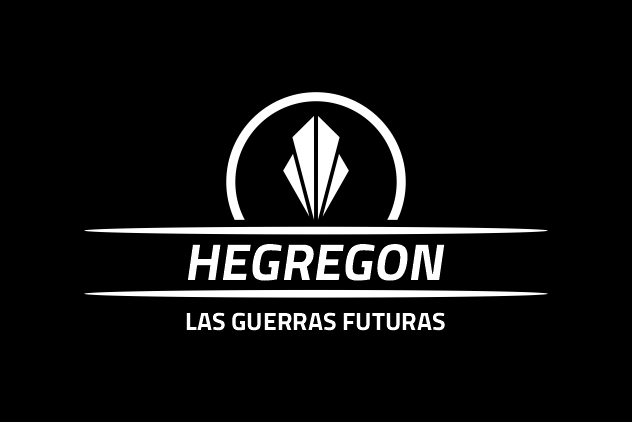

LAS GUERRAS FUTURAS
Hegregon es un juego de estategia y gestión, basado en la minería espacial y la creación de ejercitos personalizados.
Consigue prevalecer en partidas de hasta 6 jugadores con una duracón media de 40 min.
Este juego se encuentra en versión Pre-Alfa, por lo cual aun no dispone de app de gestión, pero igualemnte puedes probarlo en su versión 2D y con unos cuantos dados de 8 caras.
PROXIMAMENTE
SINOPSIS

IMPRIMIBLES